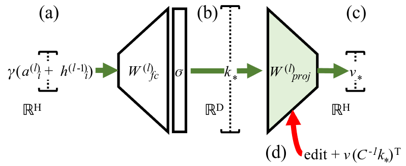
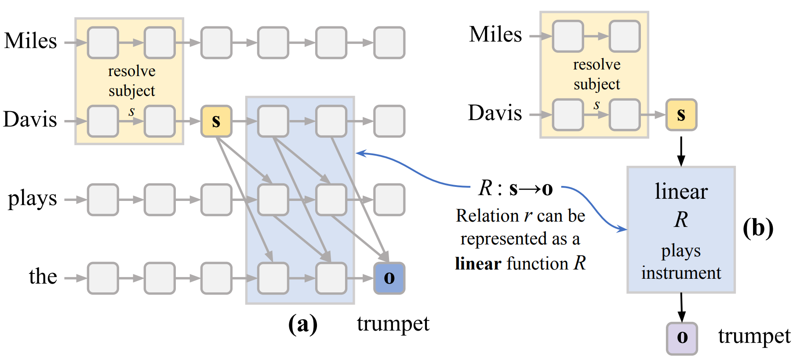
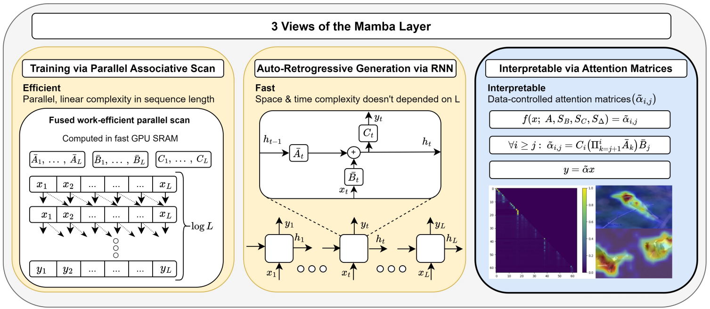
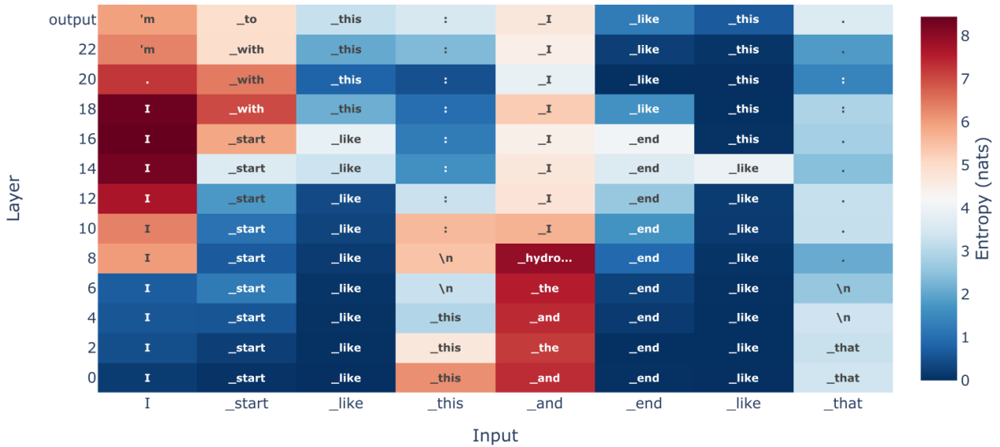

Mamba is a new foundational language model where the computational complexity grows linearly with the input length; thus it can have a much larger context window and faster inference. It achives competitive performance with similar sized transformer LMs, which is very promising. But, as these new LM architectures continue to evolve, we must ask, can we apply the tools/techniques designed to to analyze one type of neural architecture (transformers) to another (Mamba)? Also, to what extent our understanding of different mechanisms in transformers generalize to Mamba?
We investigate these questions by trying to understand how Mamba recalls factual associations by applying techniques that has been successful in localizing and editing facts in autoregressive transformer LMs.
Locating Facts with Activation Patching
To understand where Mamba stores factual associations, we apply activation patching (a). To estimate the contribution of different module-token states towards a correct factual prediction (s = Michael Jordan, r = professionally played, o = basketball) , we run the model 3 times --
- Clean Run, G: Run the model on a prompt to extract the fact we are interested in x = (s, r) = Michael Jordan professionally played
- Corrupted Run, G*: Run the model with a different s' that changes the model output to o' (o' != o)
- Patched Run, G*[← hli ] In the corrupted run G*, state hli is restored by patching its corresponding state from the clean run G.
When activation patching is applied on the residual states (b), we observe 2 distinct regions of high IE.
- early site: The early middle layers show high IE at the subject last token
- late site: The late layers show high IE at the very last token of the prompt.
We can apply activation patching to all the different types of states in MambaBlock, the Conv + SSM output si, the gating output gi, and the MambaBlock output oi.
Can ROME Edit Facts in Mamba?
ROME, or Rank-One Model Editing was designed to edit/insert facts in GPT (or a autoregressive transformer LM). ROME views the down projection matrix Wdown of GPT as a associatetive memory mapping specific keys to specific values. And, ROME inserts a new fact (a new key-value pair) by directly adding a rank-one matrix to Wdown. Checkout rome.baulab.info for details on this.
We apply ROME to all the 3 projection matrices in MambaBlocks across different layers and plot its performance in changing different facts. We use the same evaluation suite used by Meng et al (2022). Efficacy (ES) score indicate if we can make the LM say say the new fact. But, knowing a fact differs from making the LM say it. To test for that ROME uses Generalization (PS) score indicates if the edited knowledge is robust to changes in wordings and context. And, Specificity (NS) ensures that the edit does not change unrelated facts; i.e. if after inserting that Michael Jordan played soccar, the LM should not map some other athlete (say Lebron James) to soccar as well. The final score S is a harmonic mean of ES, PS, and NS.
We find that ROME can successfully edit facts in a range of layers in Mamba. Modifying Wa cannot achieve high specificity in early layers. And, Wg becomes an unpredictable mediator after layer 30. ROME achives the best performance by modifying Wo projections.
How About Attention-Knockout Experiments?
Path-dependent attention knockout experiments that have been successful in understanding factual information flow in Transformer LMs (Geva et al (2023)). In these experiments, we block out the information that flows from the qth token to the kth token via a attention head and monitor the effect on some task. This can be achived in transformer LMs by directly modifying the attention matrix calculated by the head.
However, in Mamba, it is difficult to achive this due to certain architectural choices. See the figure below.
However, we can block out information flow by mean-ablating the subject, subject-last, or other tokens to all the future tokens in different layers to understand Conv + SSM in which layers relay what information.
- The purple lines show that Mamba uses the Conv + SSM operation in early middle layers to relay information about the non-subject tokens. Blocking information from non-subject tokens in these layers can reduce the probability of the correct prediction p(o) by up to 50%.
- The green lines show that Mamba moves the subject information in 2 steps
- First, if the subject contains multiple tokens, the very early layers collate the information from all the subject tokens to the subject last token position.
- Second, Mamba uses the Conv + SSM paths in later layers (43 - 48) to propagate critical information about the subject to later tokens.
Previous Work from Baulab

Kevin Meng, David Bau, Alex Andonian, Yonatan Belinkov.
Locating and Editing Factual Associations in GPT 2022.
Notes: Applies causal tracing or activation patching on GPT models to understand
critical states that mediate
factual information. Introduces ROME to update/insert a single fact in the LM by directly modifying
the down projection matrix of a MLP module.
 Kevin Meng, Arnab Sen Sharma, Alex Andonian, Yonatan Belinkov, David Bau.
Mass-Editing Memory In a Transformer 2023.
Kevin Meng, Arnab Sen Sharma, Alex Andonian, Yonatan Belinkov, David Bau.
Mass-Editing Memory In a Transformer 2023.
Notes: Scales up ROME to edit thousands of facts in a autoregressive transformer LM by
distributing the edit across a range of critical middle layers.

Evan Hernandez*, Arnab Sen Sharma*, Tal Haklay, Kevin Meng, Martin Wattenberg, Jacob Andreas,
Yonatan Belinkov, David Bau.
Linearity of Relation Decoding in Transformer LMs 2023.
Notes: Shows that for a range of relations how the LM extracts relation specific information
(decodes the relation)
given a prompt x = (s, r) can approximated by a simple linear model. And, that linear model
can be achived by taking a
first order Taylor expansion of the LM computation itself.
Interpreting Mamba

Ameen Ali, Itamar Zimerman, Lior Wolf
The Hidden Attention of Mamba Models 2024.
Notes: Shows that the information selective-SSM brings to the kth token state from
the convolved
qth token state can be calculated. And, this information can be visualized as a heatmap
per channel (dim),
resembling the attention maps in transformers.

Gonçalo Paulo, Thomas Marshall, Nora Belrose
Does Transformer Interpretability Transfer to RNNs? 2024.
Notes: Finds that a set of selected interpretability tools designed for transformer LMs can
be applied
to SOTA RNN architectures such as Mamba, RWKV models "out-of-the-box".
This work is not yet peer-reviewed. The preprint can be cited as follows.
bibliography
Arnab Sen Sharma, David Atkinson, and David Bau." Locating and Editing Factual Associations in Mamba". Preprint, 2024.
bibtex
@article{sensharma2024locating,
title={Locating and Editing Factual Associations in Mamba},
author={Arnab Sen Sharma and David Atkinson and David Bau},
year={2024},
eprint={2404.03646},
archivePrefix={arXiv},
primaryClass={cs.CL}
}